Quina seria la teva moto indicada?
1. Quin ús en faries?
Aquest punt és dels més importants i determinarà el tipus de moto que et pots comprar depenent les teves necessitats
·1.1 Ús espontani:
Si l’ús que li vols donar a la teva moto és espontani és a dir, un ús de tant en tant, una motoTurisme 4 temps seria la moto indicada.
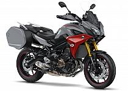
·1.2 Ús urbà:
Si l’ús que li vols donar a la teva moto és per fer-la servir en un entorn de ciutat, és recomanable una Scooter o una Moto elèctrica.
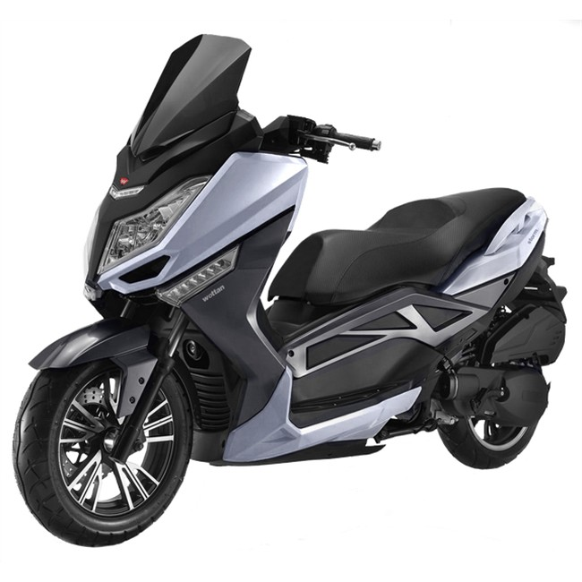
·1.3 Ús rural/de camp:
Si l’ús que li vols donar a la teva moto és per fer-la servir en un entorn de poble, la opció recomanable seria una Dual Sport que solen ser de 2 temps.

·1.4 Ús mixt:
Si l’ús que li vols donar a la teva moto és per fer-la servir en un entorn de ciutat i carretera, una moto per utilitzar cada dia, es recomanable una moto Naked 4 temps.
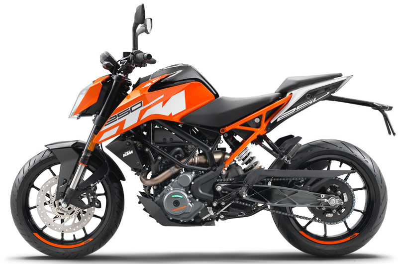
2. De quin pressupost disposes?
Un cop tens l’estil de moto escollit pel que més et convé, és el moment de veure el pressupost que disposes per pagar-la. Per comprar la moto, has de tenir clar que no només implica la moto en si sinó que també hauràs d’incloure-hi:
A) Equipament:
·Botes:
Les botes serveixen per protegir-te no només la part del peu sinó també la del turmell en accidents. No utilitzar-ne pot ocasionar:
-Fractures
-Lesions musculars
-Cremades
-Contusions
-Abrasions
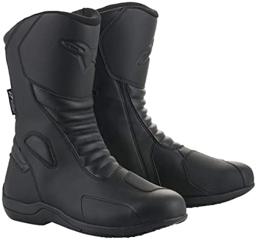
·Casc:
El casc és fonamental per protegir-te el cap. Ha de ser la part més protegida del cos perquè un cop al cap amb una certa velocitat pot portar conseqüències greus. El casc s’ha de posar abans de pujar a la moto per evitar riscs. El casc que has d'escollir, s’ha d’adaptar a les teves mesures del cap.
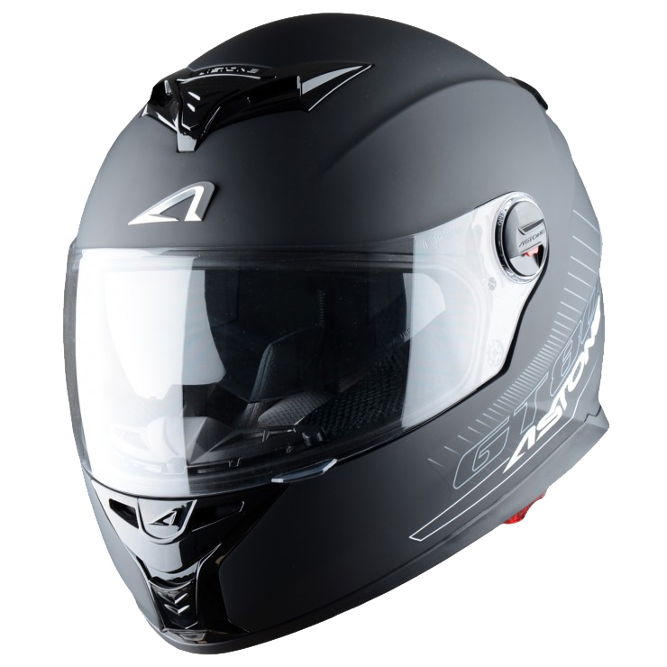
·Jaqueta:
La jaqueta és necessari per protegir-te de cremades i abrasions en cas d’accident. La zona on més protecció ha de tenir la jaqueta són els colzes i l’espatlla ja que fer-se ferides en les articulacions pot ser molt perillós.
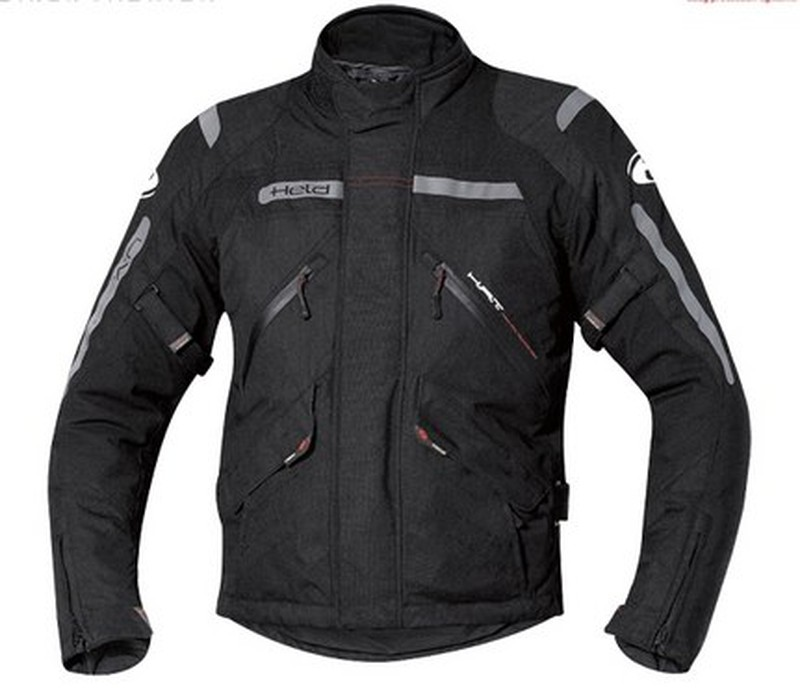
·Guants:
Els guants serveixen exactament igual que la jaqueta, per protegir-se sobretot de abrasions i cremades. Quan caiem, tendim en posar les mans al terra per protegir-nos i portar una bona protecció en aquesta zona, és vital. Uns bons guants protegeixen perfectament els dits i les palmes de les mans. A la hora de triar guants, has d’agafar uns que et protegeixin una mica més la part del radi perquè així es pugui cullar bé amb la jaqueta.
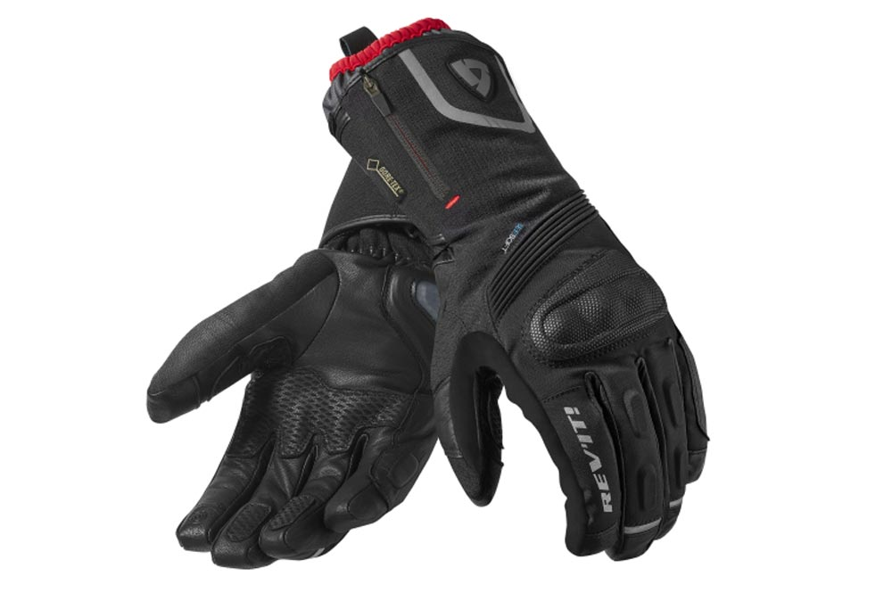
·Pantalons:
Els pantalons possiblement sigui uns dels materials més incòmodes però no treu importància a la seguretat. Els pantalons serveixen per evitar cremades en cas d’accident, també protegeixen molt bé els genolls perquè és una de les parts del cos més delicades del cos.
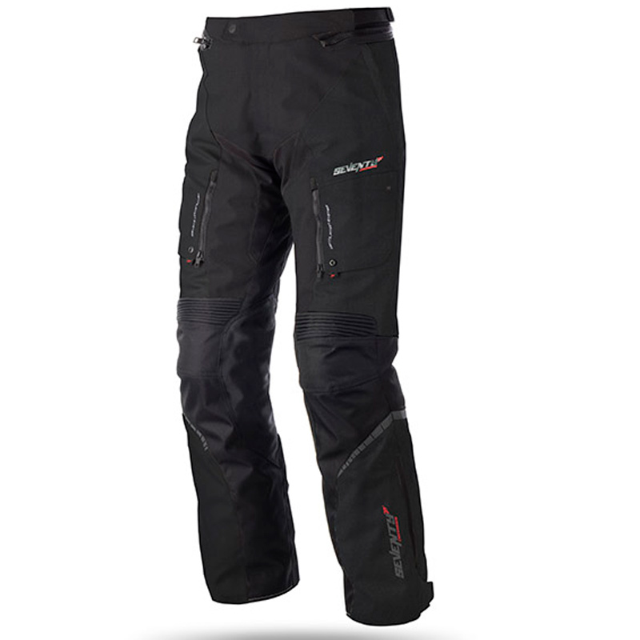
B) Assegurança de responsabilitat civil:
En cas d’accident, l’assegurança cobreix els danys ocasionats a altres civils. I també per possibles danys propis.
Possibles companyies d'assegurances:
- Mapfre
- Fénix directo
- Linea Directa
- Pelayo
- Génesis
- Verti
C) Manteniment:
Per a molts motoristes mantenir la seva moto en perfectes condicions d'ús és un plaer que es reserven per a ells mateixos. No és tant per no pagar a un taller especialitzat, sinó pel fet de tenir cura amb les seves pròpies mans al seu fidel companya de viatge. Per mantenir una moto a punt es necessita un espai adequat, planificació, alguns coneixements i paciència.
Rentar o arreglar la moto al carrer està prohibit. Totes dues accions estan tipificades com a sancions mediambientals i, encara que depèn de les ordenances de cada municipi, pots acabar pagant una multa d'entre 30 i 1.200 euros . Si no disposes de garatge o no tens ningú que et pugui ajudar a fer les tasques de manteniment de la teva moto, és millor no arriscar-se.
Les revisions que fan falta per posar la moto en marxa són:
·Rodes:
Es necessita mínim una revisió al mes i sempre que es fagi un viatge llarg, també és recomanable mirar la pressió dels pneumàtics.
·Cadena:
Les cadenes s’han de netejar, greixar i tensar. Si no ho fas, pots tenir problemes grans perquè et poden fallar i causar un accident important.
·Llums:
Abans de posar-te en marxa, cal revisar les llums per si hi ha un problema elèctric.
·Frens:
Els frens necessiten ser revisats cada cop que s’agafa la moto. Si la moto no frena bé voldrà dir que hi ha algun problema en els cables, pinces, pistons, manetes, palanca, bomba, pastilles o discos de la moto.
·Oli:
L’oli necessita una vegada al mes o dos si és estiu, ja que s’evapora per l’acció de la calor. Per anar bé, el nivell ha d’estar entre el màxim i el mínim.
·Bateria:
La bateria necessita una revisió general i a nivell de càrrega. Si la moto ha estat parada durant un llarg temps, és molt important la seva revisió.
·Filtres:
S’aconsella que cada cop que es fa el canvi d’oli, es canviï el filtre però no és tan important aquest aspecte. El filtre d’aire cal mantenir-lo net de pols i brutícia que se li pugui generar.
·Líquid refrigerant:
Necessita una revisió mensual del nivell i durada. En referència a l’oli, el nivell ha d’estar entre el màxim i el mínim.
2.1 Pressupost alt:
Si disposes d’un pressupost alt per mantenir estable aquests factors, pots triar el model que tu necessitis o vulguis. Una bona opció seria una moto nova.
2.2 Pressupost baix:
Si disposes d’un pressupost baix, la millor opció seria una moto de segona mà o una moto 2 temps que és més econòmica.
3.Per edat
Un cop escollida la moto i en funció del pressupost que disposes, veurem quina seria la millor opció de moto segons la teva edat. Tot variarà en funció del temps que portis anant en moto.
·3.1 De 16 a 18 anys:
Si ets menor d’edat o t’acabas de treure el carnet fa relativament poc, no és recomanable portar una moto de gran cilindrada.
Els primers anys en moto serveixen per agafar experiència i per això el millor és utilitzar una moto de poca cilindrada o pocs cavalls (CV). El millor en aquests casos es adquirir una moto 125cc.
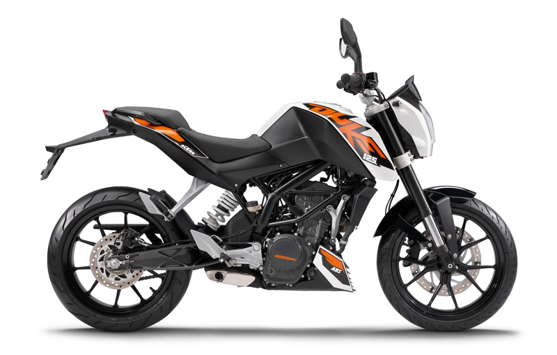
·3.2 De 20 a 25 anys:
Si ja fa uns 3 o 5 anys que portes moto, pots optar a pujar la cilindrada o més cavalls de potència. El recomanable seria una moto de mitjana cilindrada, una 250cc o 500cc.
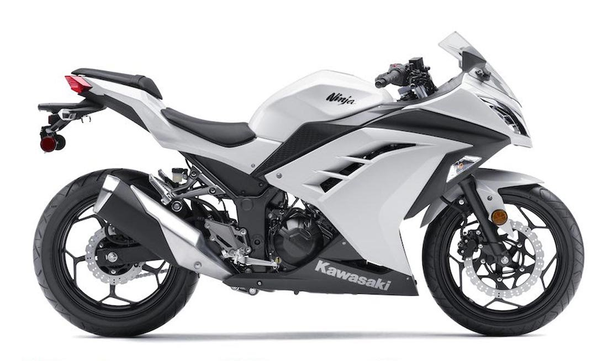
·3.3 Més de 25 anys:
Si tens pràctica anant en moto pots passar a cilindrades més altes. El recomanable en aquest cas seria una moto a partir de 600cc. Si tens 26 anys i només fa tres anys que tens el carnet, és millor una cilindrada petita o mitjana.
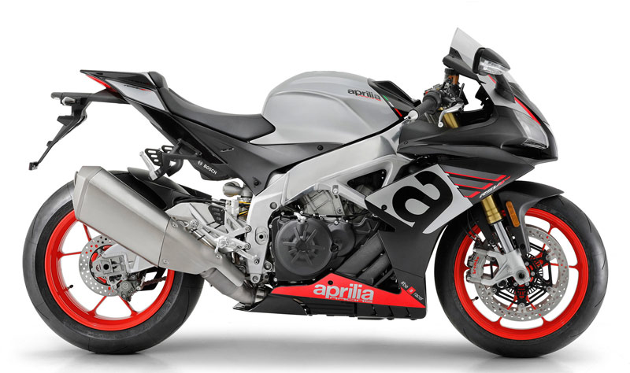